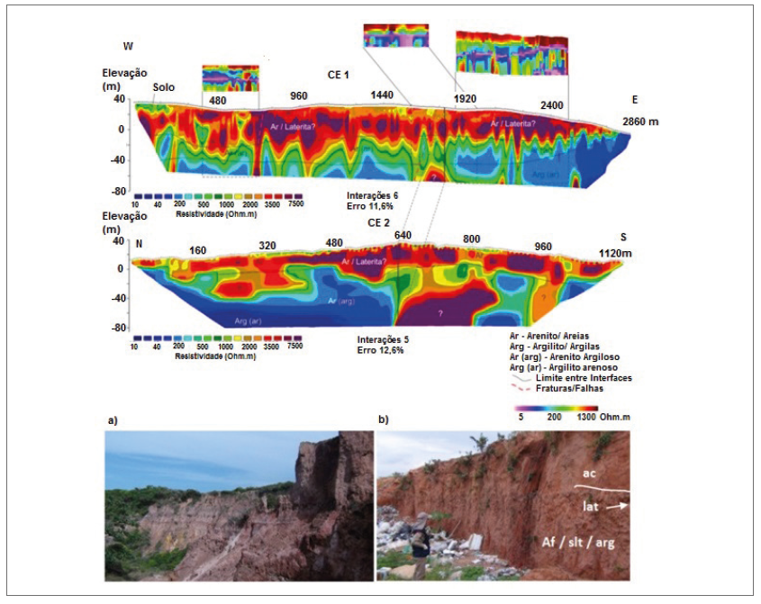

Estudos hidrogeológicos da Ilha de São Luís, MA : subsídios para o uso sustentável dos recursos hídricos : resumo executivo

Resumo em Português
ESTE RESUMO EXECUTIVO APRESENTA UMA SÍNTESE DOS TRABALHOS realizados no projeto “Estudos Hidrogeológicos da Ilha de São Luís - MA: Subsídios para o Uso Sustentável dos Recursos Hídricos”, elaborado por meio de parceria firmada entre a Agência Nacional de Águas – ANA e o Serviço Geológico do Brasil – CPRM e apresentado em detalhes nos 5 Volumes do Relatório Final, conforme a seguir: • O Volume I, trata das carcterísticas gerais da área, icluindo a caracterização geológica e geofísica, geomorfologia, solos e testes de infiltração, além das condições de uso e ocupação do solo na Ilha; • O Volume II trata da caracterização hidroclimática local, avaliação da urbanização e suas consequencias nos recursos hídricos totais, executa o balanço hídrico geral da Ilha e discorre sobre as estimativas de recargas das águas subterrâneas, quer sejam naturais ou oriundas da urbanização (perdas nas redes de distribuição de água, rede de esgotos, etc.); • No Volume III se apresenta a avaliação hidrogeológica e hidroquímica da Ilha e se apresenta uma análise isotópica sobre as águas subterrâneas existentes; • No Volume IV, mais direcionado diretamente à gestão dos recursos hídricos, se discorre sobre as condiçoes de vulnerabilidade e perigo de contaminação das águas subterrâneas, dos riscos de salinização, estima suas recargas, reservas, disponibilidades e potencialidades, apresenta-se um modelo matemático de simulação, analisando diversos cenários possíveis até o ano de 2050. Mostra ainda um capítulo sobre a gestão dos recursos hídricos, tecendo comentários e sugerindo estratégias para este fim; • Finalmente,no volume V se mostram os mapas produzidos nos trabalhos, no formato PDF, mas que tmabém podem ser vistos no Sistema de Innformações Geográficas – SIG componente do Relatório Final. A formalização desta parceria se deu através de assinatura do Termo de Execução Descentralizada 06/2016/ANA, celebrado entre as instituições. Os trabalhos foram elaborados na escala de 1:50.000, tendo como OBJETIVO GERAL a realização de estudos hidrogeológicos visando fornecer subsídios para a gestão de recursos hídricos, apresentar sugestões de normas e procedimentos de gestão, indicar diretrizes para uma exploração sustentável e a verificar a possibilidade de ampliação do uso das águas subterrâneas como possibilidade de incremento ao sistema de abastecimento na região. A Ilha de São Luís compreende os municípios de São Luís, Paço do Lumiar, Raposa e São José de Ribamar, abrangendo uma área de aproximadamente 900 km2, sendo que o levantamento dos dados primários ocorreu, principalmente, nos anos de 2017 e 2018.